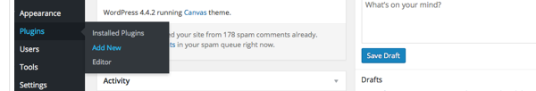
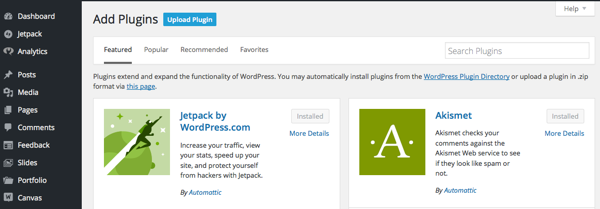
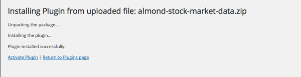
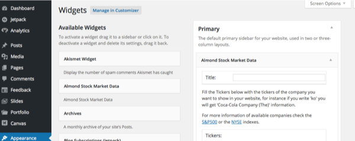
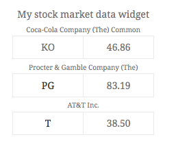
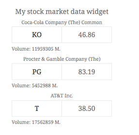
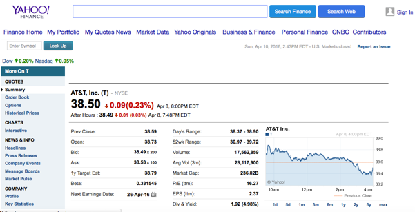
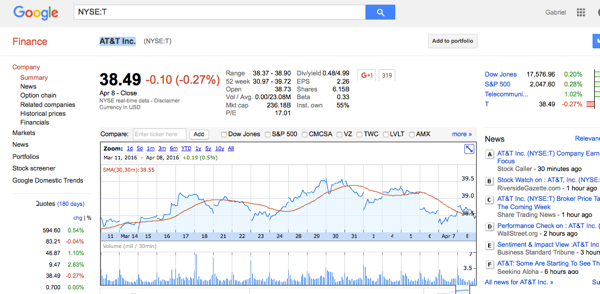

Created: 10/April/2016
By: Gabriel Maldonado - AlmondWP
Email: hello@gabrielmaldonado.me
Thank you for purchasing my plugin. If you have any questions that are beyond the scope of this help file, please feel free to email via my user page contact form here. Thanks so much!
Once you have your zip file from Envato you only need to upload it through the administration area in your WordPress website. Click on Dashboard > Plugins > Add New.
In the Add Plugins page you only have to click on the "Upload Plugin" button and select the file containing your new plugin.
Once you click the Install now button WordPress will take care of the process and show you a new page similar to this one
The plugin will appear in your Installed Plugins list, and once you activate it you will see few options under its name :
The next step will be clicking on Settings so you can use the plugin in your website
Activate it under Appearance > Widgets > Available Widgets or clicking in Settings below the plugin name as shown in the Installation guide. Once you're in the Widgets page you only need to grab the Almond Stock Market Data widget from the Available Widgets column and drag and drop it into the widget are you like (primary, secondary, footer, homepage, ... options will depend on your theme).
Volume activated.
Volume deactivated.
Yahoo Finances is the page used by default
Google Finances can be used instead just checking the box.
Finally, a videotutorial can be found in youtube by clicking this link here
Once again, thank you so much for purchasing this theme, I'd be glad to help you if you have any questions relating to this plugin, I'll do my best to assist. If you have a more general question relating to the plugins on CodeCanyon, you might consider visiting the forums and asking your question in the "Item Discussion" section.
Gabriel Maldonado - AlmondWP